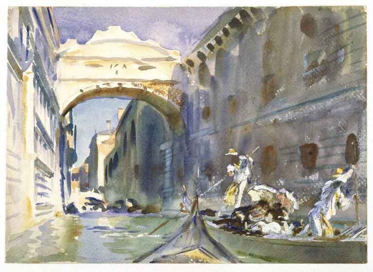

<head>
<meta charset="UTF-8" />
<meta name="keywords" content="drawing, painting" />
<meta name="description" content="drawings by Sunjy" />
<title>Sunjy</title>
<link rel="shortcut icon" type="image/x-icon" href="../../mImages/mCommon/favicon.ico" media="screen" />
<link rel="stylesheet" type="text/css" href="../../mCsses/mCommon/mCssA.css" />
<link rel="stylesheet" type="text/css" href="../../mCsses/mCommon/mCssB.css" />
<link rel="stylesheet" type="text/css" href="../../mCsses/mCommon/mCssC.css" />
<link rel="stylesheet" type="text/css" href="../../mCsses/mCommon/mCssD.css" />
<link rel="stylesheet" type="text/css" href="../../mCsses/mContent/mCssA.css" />
<link rel="stylesheet" type="text/css" href="../../mCsses/mContent/mCssB.css" />
<link rel="stylesheet" type="text/css" href="../../mCsses/mContent/mCssC.css" />
<link rel="stylesheet" type="text/css" href="../../mCsses/mContent/mCssD.css" />
</head>
<script type="text/javascript" src="../../mScripts/mContent/mContentAA.js" /></script>
<script type="text/javascript" src="../../mScripts/mContent/mContentAB.js" /></script>
<script type="text/javascript" src="../../mScripts/mContent/mContentAC.js" /></script>
<script type="text/javascript" src="../../mScripts/mContent/mContentAD.js" /></script>
<script type="text/javascript"></script> 
<script type="text/javascript">
document.write('<div class="mImgAbsolute"></div>');
/*
document.write('<p class="mFontSizeBColor" />From a white paper...</p>');
document.write('<table class="center"><tr><td>');
document.write('');
document.write('</td></tr></table>');
*/
</script>


<script type="text/javascript">
document.write('<p class="mFontSizeBColor" />The Bridge of Sighs</p>');
document.write('<p class="mFontSizeSColor" />“The Bridge of Sighs” by John Singer Sargent. The Bridge of Sighs depicts a bridge located in Venice, Italy. The enclosed bridge is made of white limestone, has windows with stone bars, passes over the Rio di Palazzo, and connects the New Prison to the interrogation rooms in the Doge’s Palace.<br><br>It was built in 1600 and was named by Lord Byron in the 19th century based on the suggestion that prisoners would sigh at their last view of beautiful Venice through the window before being taken down to their cells.<br><br>In this beautiful watercolor, we can see Sargent’s use of multiple techniques to create light and highlights in his works:<br>•He created light by not coloring the white paper that forms the top of the arch.<br>•The line of blue pigment indicates where the wet paint of the sky met the dry white paper.<br>•The application of white impasto used to depict the gondoliers and the umbrellas of the passengers in the boat.<br>•He used dry scraping in the tan building to create subtle highlights.<br>•He removed wet paint in the sky above the arch.<br></p>');
document.write('<table class="center" /><tr><td>');
document.write('<br>It was built in 1600 and was named by Lord Byron in the 19th century based on the suggestion that prisoners would sigh at their last view of beautiful Venice through the window before being taken down to their cells.<br><br>In this beautiful watercolor, we can see Sargent’s use of multiple techniques to create light and highlights in his works:<br>•He created light by not coloring the white paper that forms the top of the arch.<br>•The line of blue pigment indicates where the wet paint of the sky met the dry white paper.<br>•The application of white impasto used to depict the gondoliers and the umbrellas of the passengers in the boat.<br>•He used dry scraping in the tan building to create subtle highlights.<br>•He removed wet paint in the sky above the arch.<br>" />');
document.write('</td></tr></table>');
</script>


